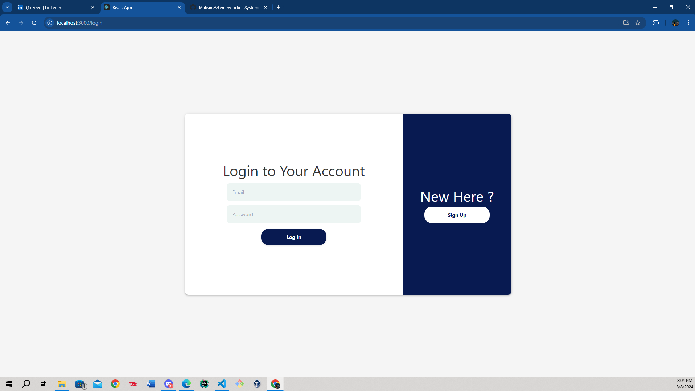

IT Help Desk System
- Language: JavaScript
- Libraries/Frameworks: React, Node.js, Express, MongoDB, Tailwind CSS, and more
- Environment: Docker
- Github: Visit Repository

In this section of the Ticket Management System, users are greeted with a clean and intuitive login interface. The system supports secure user authentication and registration processes, ensuring that only authorized users can access the dashboard and manage tickets. The design focuses on simplicity and user-friendliness, with a clear division between returning users and new users, guiding them through the appropriate process.
The main dashboard provides users with a comprehensive view of all open tickets. Each ticket displays critical information such as Ticket ID, User ID, Type, Role, Subject, Description, and Status, allowing for efficient management and resolution of issues. The dashboard is designed to be the central hub where users can quickly assess and manage the support requests assigned to them.
Layout and Functionality:
- Top Picture: This picture shoes the users dashboard displaying all the tickets they have submitted.
- Bottom Picture: Here, you will find the admins dashboard showing the tickets from all users so that the admin can assign them to an employee. The admin also has the ability to create and delete
The calendar feature allows employees to view and manage ticket-related activities on a weekly basis. It helps employees keep track of important deadlines and scheduled tasks, ensuring that all issues are addressed in a timely manner. The calendar is seamlessly integrated into the system, providing a visual representation of the workload and helping employees prioritize their tasks.
The ticket creation process is streamlined, guiding users through selecting the appropriate category for their issue—such as Repair, Account, Product, Billing, Hardware, or Software. Each category comes with a brief description, ensuring that the user's concerns are accurately captured and routed to the correct department. This step is crucial for maintaining an organized and efficient ticket management system.